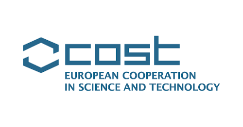

🧠 Patent Proposal: AI Medical Model 2026–Present
I conducted in-depth research into the challenges that hinder the safe integration of medical LLMs into healthcare organizations, including the potential patient-safety risks posed by hallucinated medical outputs.
My research examines the root causes of hallucinations and explores a clinical reasoning simulation model integrated with the Clinical Protection Intelligence Protocol (CPIP) governance layer and external auditing to detect and reduce hallucinations in medical outputs.
The CPIP link provides access to a clinical validation platform designed to enable physicians to evaluate and validate the protocol.
🧪 AI Clinical Evaluation Framework 2025
I developed robust benchmarking protocols for Large Language Models (LLMs) within clinical environments through rigorous comparative analyses of output behaviors across competing AI models on complex healthcare case studies. Operating as a Medical Expert and AI Trainer at Outlier, this research establishes strict safety standards, optimization strategies via structured medical prompting, and auditing metrics under adversarial pressure to ensure compliance with global healthcare guidelines.
🛡️ COST Action — AGENT-SEC 2026 International Research Collaboration

Secure Multi-Agent AI & Post-Quantum ZK Execution
An international research collaboration developed within the COST Action framework, bringing together researchers and specialists affiliated with European institutions and international research partners to explore secure, verifiable, and efficient architectures for next-generation autonomous computing systems.
Our Research Focus
AGENT-SEC brings together four interconnected research areas:
- Post-Quantum Cryptography (PQC)Preparing distributed node architectures and state verification loops for post-quantum cryptographic standards.
- Zero-Knowledge Proof-of-Execution (ZK-PoE)Designing verifiable computation pipelines and cryptographic audit mechanisms for decentralized workloads.
- Multi-Agent AI System GovernanceEstablishing type-safe, fault-tolerant execution contracts and alignment protocols for autonomous AI agents.
- Eco-Compute OptimizationImplementing energy-aware benchmark frameworks to minimize compute overhead in cryptographic verification.